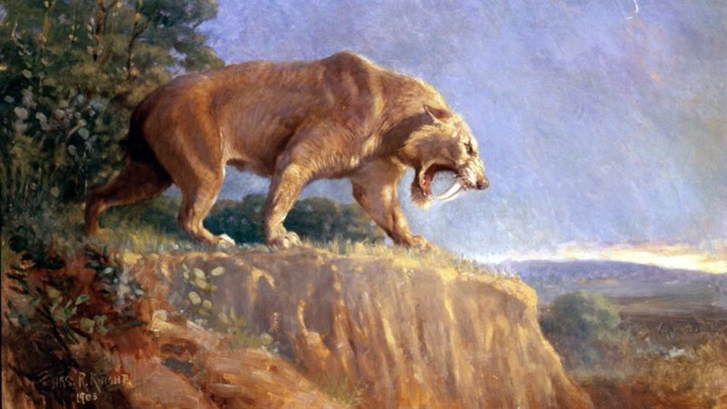
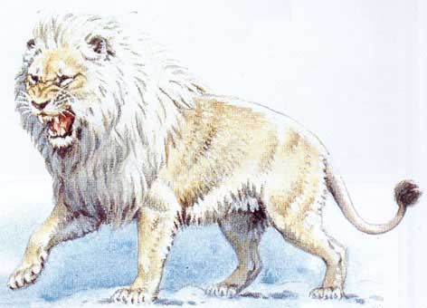

Tigre-dente-de-sabre(Esmilodonte)

Este felino pertencia á subfamilia Machairodontinae e viviu durante a época Pleistoceno.
Durante a sua vida estes felinos viveram na América do Sul e do Norte.
Foram extintos á 2,5 milhões de anos e a sua provável causa da sua extinção foi o extinção da megafauna pois os tigre-dente-de-sabre
eram especialistas em caçar herbívoros de grande porte e quando estes foram extintos, deixaram de ter alimento.
Leão-americano(Panthera leo atrox)

Este leão viveu durante o período Pleistoceno nas planícies da América do Norte e do Sul.
Era bem mais que o leão atual medindo cerca de 2.6 metros de comprimentos e 1,4 metros de altura nos ombros.
Foram extintos á 340 mil anos e a sua provável causa da sua extinção foi o extinção da megafauna pois estes leões também eram especialistas em caçar herbívoros e deixaram de ter alimento.